| Home / Dive Resorts / Live-Aboards / Snorkeling / Who We Are / Book a Trip |
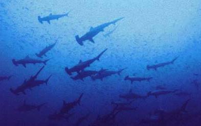
Schooling hammerhead sharks abound near La Paz.
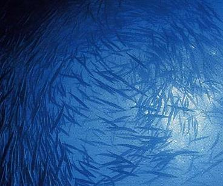
Hundreds of schooling barracuda challenge the sun!
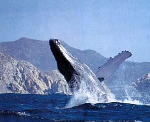
Humpback breaching, reaching for the sky.
BAJA CALIFORNIA, MEXICO:
LA CONCHA BEACH RESORT
Call for up-to-date pricing & specials -- 952-953-4124.
|
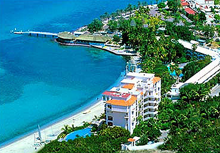 |
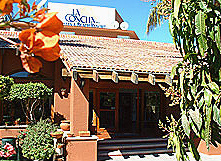 |
|
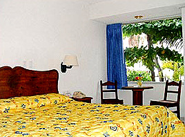 |
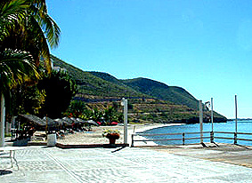 |
Located 900 miles South of San Diego & about 100 miles north of Cabo San Lucas on the eastern coast of Mexico's Baja Peninsula, right on the Sea of Cortez, La Paz is our vote for the best-value dive vacation destination in all of Mexico. One of the safest, too. It's easy to fly to Baja California in Mexico, & easy to stay there, but hard to leave the place. Prices in La Paz are low, & spirits are high among the gracious townspeople & La Concha Beach Resort staff. The underwater thrills in Sea of Cortez diving are endless for scuba lovers, whale watchers & casual snorkelers alike. Baja diving is not a coral experience, but a big sea animal adventure.
Mexico's Sea of Cortez is famous among U.S. scuba divers for the thrilling big-animal sightings it offers nearly all year around, with vast schools of peaceful hammerhead sharks, sometimes several hundred at a time, circling overhead like eerie silent starships. In a sense, Baja diving is really known for these hammerhead sharks in schools, plus the seals & sea lions, more than any other factors. Since most dive guides we know agree that Baja diving really has its epicenter in LaPaz diving, this is one of the two key nerve centers for serious quality Mexican scuba diving. Divers also relish their close encounters with a myriad playful marine mammals -- from seals to sea lions -- which cavort around rock rookeries & sea mounts just off the coast. The seals will swim up to you & clown around like impish children right in your face mask. Even the huge blubbery sea lions, who weigh hundreds of pounds, swim with the grace & power of submarine ballet artists, swooshing only yards away in friendly circles. That's the essence of Sea of Cortez diving. The Bottom Line is Baja diving means dive vacations with the Big Critters ! And Sea of Cortez diving is pretty tough to beat, any season of the year, for low-cost + high value. Now there's more to Baja vacations than scuba diving with hammerhead sharks...
Yes, there are two more creatures that fuel the imaginations of scuba diving enthusiasts even more keenly. From December through February each year, hundreds of Pacific gray whales migrate south from Alaskan & Pacific Northwest waters, down to the Sea of Cortez. These lively pods of gray whales transform many shallow inlets along the coast near La Paz into awe-inspiring whale nurseries. The warm, calm waters of the Sea of Cortez are ideal for sheltering the gray whales calves, & for new breeding as well. Talk about pure mammal attraction. The whale watching here can be positively awe-inspiring some weeks in winter. During this prime winter window of weather, gray whale watching is the lifeblood of the Sea of Cortez around La Paz, & especially at La Concha Beach Resort.
Sometimes this dive resort's day trips can get you close enough to these gentle giants to almost reach out & touch them from over your gunwale. By early March, the magnificent & vastly intelligent gray whales begin their long swim northward to Alaskan waters again, filling the ocean with plaintive, otherworldly squeaks & piping cries. Maybe they're saying "so long amigos, see you next winter." To see gray whales this close is a whale watching adventure that will transfix your heart for one eternal moment, & will transform forever your perspective on man's place on this fragile planet. Whale watching is as much a spiritual experience as it is an emotional recharging. Outside of places like La Paz & stateside movie theaters, few scuba divers or tropical vacationers ever are blessed to see a gray whale "up close & personal." Go for it!
But there's more to Big Critter central than whale watching. Someday, you may be lucky enough to see the elusive "Senor Big," largest fish in any ocean -- the tranquil & harmless whale shark. These mammoth fish can measure up to 40 feet long & they can weigh tons, but they're meek vegetarians so have no fear of the whale shark! It's tough to see the shy whale shark, but those scuba divers fortunate enough to see them will never forget that day -- when a living wall glided serenely past then vanished with the broad flick of a tail the size of a sports car. Of course, we cannot promise that you'll get to see whale sharks, or waltz with "Meester Beeg," but some of our clients have nabbed this rare & magical opportunity & returned home stateside with glowing photos of whale sharks & some major "fish stories" to boot.
For sheer economy -- air tickets, meals & dives -- La Paz in Mexico's Sea of Cortez region is one of the best-value warm water dive destinations anywhere in the world, for West Coast divers especially. Round-trip air tickets from L.A. are often right around $300 - $400 pp or less. And land costs are amazingly affordable. You can grab three great meals a day for less than USD $25 per person, which is about one third the cost you'll find on many Caribbean resort islands. Also, all of La Concha Beach Resort's comfy rooms are facing the ocean, with gorgeous water views & an excellent sandy beach only a stroll away.
La Concha Beach Resort is a quintessential bargain. There are 107 air-conditioned rooms & suites, all with color TV, phone & charming decor. There are swimming & Jacuzzi pools right next to the beach. You can rent or charter paddle boards, kayaks, wave runners, water-skiing trips, day sailing trips, snorkeling trips, whale-watching adventures, half-day scuba trips & sunset cruises. There are shops nearby where you can rent wind-surfing boards, or charter a deep-sea marlin fishing expedition. La Concha Beach Resort also features tennis courts, a fine little restaurant, video rentals, nightclub, on-site car rentals & a classic Mexican fiesta every Saturday evening. You want it, La Paz has it. Baja vacations do not come any better than this, we feel.
With its high-beamed ceilings in the lodge, & thatched-palm palapas along the waterfront, La Concha Beach Resort blends Old World rustic charm & New World streamlined elegance. It just feels good to stay here at La Concha Resort. Relaxation & peace are the ruling energies of the village. La Paz natives are kind & friendly & their attentive spirit makes you want to return for more. This is a perfect way to escape the party-hearty scuba legions that are crowding & sullying many corners of the Caribbean nowadays. La Paz is Mexico's last best secret. Shhhhh!!! We do NOT want this beautiful locale to be trampled by tourist hordes, the way Cozumel & Cancun have been ruined since the late 1990s. La Paz is still an old-fashioned wonderfully serene Mexican town, & we hope it stays that way for all time to come. Buena suerte, che' !
( Much of this following text is
provided courtesy of our longtime friends at La
Gracias hermanos del mar, de veras apreciamos
su lealdad, amabilidad y servicio profesional por todos estos anos. )
La CONCHA BEACH RESORT --
�a �HOST �of
�FINE�
AMENITIES
All La Concha rooms have separate
balconies with full ocean views or partial ocean views. In addition to our
private beach & beachfront shade-palapas, guests can swim in our fresh
water in-ground pool. Enjoy many other of our resort
amenities which will include pool bar with beach service, full service
restaurant serving authentic Mexican & International cuisine including
fresh seafood specialties. Bar & restaurant Room Service is available.
Additionally La Concha offers an
ocean-front
Guest Laundry Service is available,
complimentary
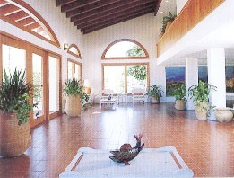
La Concha's lobby offers Old World charm.
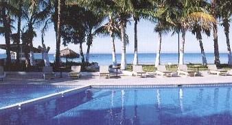
Here's a tranquil locale to unwind & rediscover your
youth & sense of humor, while saving big travel bucks.
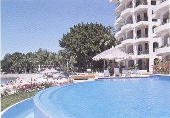
All rooms face the ocean & the clean seaside pool.
SEASONAL� WEATHER �PATTERNS
�in �
Here is the weather report for the
average diving season.� This may change
depending upon the prevailing conditions. Degrees are measured in Fahrenheit.
Winter
Air temps: 65-75
degrees. Surface water temperatures: 65-75 degrees. Surface water temperatures:
65-75 degrees. Some swells & northern winds, especially
in the afternoons. Good time for hammerheads on El Bajo or the sea lion
colony at Los Islotes. Winter from early December through late March is the
very best season for scuba divers because they can see much more pelagic
activity closer to the surface.� The
sharks & rays are more abundant, & sometimes whales can be seen at the
surface en route to diving seamounts.
Spring
Air temps: 70's.
Surface water temperature: high 60's to mid 70's. Still some
northern winds & swell, but conditions definitely getting warmer.
Hammerheads could still be around as well as whale sharks as the water gets
warmer & plankton starts to appear. Schooling jacks & yellowtail can be
found in the rocky areas as well as bass, pargo & grouper. Toward the
latter part of the spring season, the ocean can be as flat as glass.
Summer
Air temps increase from late May through the fall & range
from the 80's to low 100's. July, August, & Sept. can be hot with days in
the 100's. But hot days mean hot fishing! Water temps also increase through the
season from the high 70's into the high 80's. Despite some early morning & late
afternoon breezes from the south (Coromuel winds), generally the ocean is flat
& the weather is balmy & tropical. For divers, the visibility ranges
from 40-70 feet.
Fall
Basically a continuation of summer conditions
with generally warm waters & warm seas until the later part of the season
when the winds & currents change in approximately late November to early
December. As the water cools down, the hammerheads start schooling at El Bajo.
There is a lot of Blue & Black Marlin in the area & schools of colorful
Dorado, too.
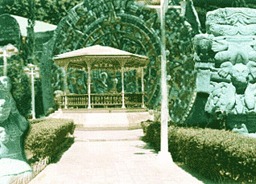
Ancient Aztec symbols in Baja.
SIGHTSEEING� ATTRACTIONS �in
�& �around �
� Onsite certified Water Sports Centre offering diving
lessons. Harbor & island sightseeing tours, kayak, Hobie
cat sailboats & wave runner rentals, diving & snorkeling gear rentals.
� Serpentarium (museum of wild snakes & vipers)
� Anthropological Museum
� Aquarium
� Shrimp Hatchery
� Local marinas (2) one of which is only 2.5 kilometers south of the hotel
� Art & Artesian Galleries, Shops, Outdoor Markets
� Weaver's Studio
� Pottery Studio
� Spanish Language Immersion School
� Local Tennis Courts
� City movie theaters with English subtitled first run international films
& more.
FISHING� PACKAGES �at� La CONCHA BEACH RESORT
Check out what many consider to be
the hottest fishing spot in all of
The names are legendary: Esp�ritu
Santo Island, Cerralvo Island, El Bajo, Roca Montana, Muertos
Bay, The 88 Spot, Las Arenas, The Buoys; the list goes
on & on!� Imagine a 50-pound tuna
boiling & foaming only 200 yards off Las Arenas Rocks; a 30 pound
pargo dragging you into the reef of Cerralvo Island; schools of 25-50 Dorado
dancing at the end of your line in the San Lorenzo or San Jos�
Channels; a crashing 30-pound yellowtail being pushed out of flat calm
waters by 100-pound sailfish on El Bajo.
Whether you are a beginner with no
experience or a "hot stick" with some notches on your reel we at can
put you on a panga (skiff), super panga, cruiser or live-aboard boat for the
adventure of a lifetime. Experienced captains & crews are ready to handle
any challenge. Fish cleaning, gear rental, freezer storage are
many of the services that are also available. Our hotel restaurant "
La Concha Beach Resort actively
support conservational awareness of all our natural resources including respect
for the resources of the Sea of Cortez & the catching of only the fish you
eat. We applaud "catch & release" practices & in the
interests of better sportsmanship, we can also make arrangements for alternative
methods of fishing such as light line fishing, kayak fishing & fly fishing.
Summer months are hot but offer the
greatest variety of catch, yet the least desireable scuba diving. There are
some mating season restrictions for tuna.
BRIEF �GEOGRAPHIC �& �CULTURAL
�HISTORY �of
It is has been established by
anthropologists that indigenous people inhabited La Peninsula
In the 16th century -- precisely on May 3rd,
1535 -- the conquistador Hernan Cort�s first arrived at what is now
The peninsula is divided into
northern & southern states, Baja California Norte & Baja California
Sur. La Paz, now the capital of southern or lower Baja (BCS), has endured
numerous conquistadors, pirates, missionaries, explorers & entrepreneurs
creating a flowery historical mosaic of risk, daring, & adventure. It was
even for a period of time an open port teeming with traders from many
countries. Locals refer to themselves as ��sud-californianos� �& resistance to change is a
characteristic that makes this area so uniquely attractive.
The surrounding waters of
Today,
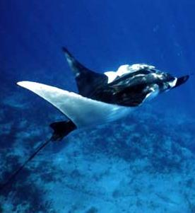
A manta ray at manta play!
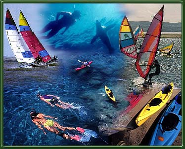
This Baja watersports graphic is published
with permission of Cortez Club dive center.
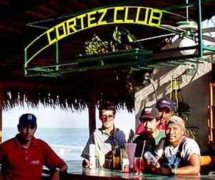
Scuba divers & snorkeling enthusiasts enjoy
a sip by the susurrating waves at Cortez Club.
FOR MORE INFORMATION or RESERVATIONS:
Contact: John & Susan Hessburg, Mgrs
U.S. DIVE TRAVEL Network
PMB 307 / Suite # 116
15050 Cedar Avenue S.
St. Paul, MN 55124-7047
Voice Mail: 952-953-4124
E-mail: divetrip@bitstream.net
Website: www.usdivetravel.com
******************************************************
IMPORTANT REMINDER about PRICES & TARIFFS:
All Baja diving package prices listed here are subject to possible change in this steadily evolving travel market. Lodging & diving prices are traditionally stable, while air prices can fluctuate daily. Until air tickets are issued, all airlines reserve the right to change airfares without notice -- an industry standard. We at U.S. Dive Travel will price-protect you to the utmost of our professional ability; & that has been our pledge for one decade now. Our Baja diving vacation experts normally secure wholesale discount air tickets for our clients who book early enough to secure limited seats in the best price categories. Remember please, the federal government has deregulated airlines, so only they control their pricing for Baja vacation packages -- not any travel professionals.
Unless specifically noted, these above Baja scuba diving packages are prices for only the land-based portion of the dive resorts, in most cases reflecting double-occupancy rooms. At many dive resorts, there will be no triple-occupancy rooms offered. Some exceptions will be noted. International & commuter "island-hopper" airfares are always extra above these land costs. Nominal service fees are also extra for air tickets & the vessel + side tour components. The baseline tariffs for all clients start at $45 per person for the land portion + $20 pp for the air tickets. Late-booking clients may receive slightly higher tariffs on the lodging + diving at many of our dive resorts.
The preferred payment mode for all Baja dive resorts & Baja side tours is by cashier's check or wire transfer in U.S. dollars. All clients living outside the USA or Canada will need to pay for their dive vacations via direct wire transfer in U.S. dollars. No personal checks will be accepted for the land portion of any reservation. Thank you for your gracious understanding. Our service level is the highest & our prices the lowest in this industry, & thus we need to preserve a reasonable margin. For published-fare air ticket bookings, USDT always accepts Visa & Mastercard.
Remember, all Baja diving vacation clients to all foreign destinations will be asked by local officials overseas, upon departing the airport on your final day, to pay a nominal government departure tax, usually between USD $30 - $40 per client. USDT cannot collect this tax beforehand, so you simply pay it down there, in your host country. Be sure to stash away a little cash for this final moment at the airport, so you'll get your exit visa stamped quickly with no fuss; & away you go. Best of luck with your dive travel plans. We hope your Baja scuba diving vacation is a safe & satisfying adventure. Blessings & best wishes with ALL your Baja dive vacations.
Best fishes too!
>////*> <*\\\\<
John Hessburg, General Manager
& Susan Hessburg, Operations Manager
Founding Partners, U.S. Dive Travel Network.
| Home / Dive Resorts / Live-Aboards / Snorkeling / Who We Are / Book a Trip |
© Copyright U.S. Dive Travel Network.